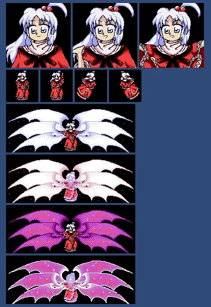

THEME OF SHINKI
神話幻想 ～ Infinite Being
神绮的主题曲 · 东方怪绮谈 · 最终 BOSS 曲
0:00
0:00
曲评（ZUN）
最终 BOSS 的主题曲，理所当然地下了很大力气。我一直都为能作出在气势与可爱间取得微妙平衡的曲子而努力着。主旋律比较容易给人留下些印象，大概感觉不错。大致很喜欢。
东方Project 第五作 · 東方怪綺談 ～ Mystic Square
「巫女什么的，不过是神的狗而已！」
东方Project角色之一，作为第五作《东方怪绮谈》的六面 BOSS 登场。身为创造魔界的神明，她性格冷静而豁达，对自己的力量充满自信，甚至到了有些狂妄的地步。

ORIGINAL APPEARANCE
先从她最早的样子说起——那是 1998 年，魔界第一次向玩家打开门。

神绮在攻击时展开的六翼——白与黑两种都有出现。原作附带文档里写的是黑色翅膀，而「翅膀一直在」其实是二创的习惯画法，原作里它是可出现可消失的。
「創造魔界の神 —— 神绮」 東方怪綺談 ～ Mystic Square · 六面 BOSS
PROFILE
名字、称号、登场作，以及那首属于她的最终 BOSS 主题曲。

THEME OF SHINKI
神绮的主题曲 · 东方怪绮谈 · 最终 BOSS 曲
最终 BOSS 的主题曲，理所当然地下了很大力气。我一直都为能作出在气势与可爱间取得微妙平衡的曲子而努力着。主旋律比较容易给人留下些印象，大概感觉不错。大致很喜欢。
RELATIONSHIPS
原作里真正被交代过的关系只有一条：她与梦子。
原作中唯一交代了与神绮关系的角色是梦子。梦子是神绮最高级别的造物，也是神绮的女仆，深受神绮信赖和宠爱 —— 当着自机的面和神绮顶嘴还能被迁就的程度。
神绮和梦子的组合在同人圈通常被称为「梦神组」（夢神）。除此之外，二创中也有把神绮爱丽丝塑造成母女（母女组）、把神绮和圣白莲塑造成师徒等情况。

神绮与梦子——造物主与她最高级别的造物。梦子可以当着自机的面和神绮顶嘴还被迁就，这份纵容大概就是原作里神绮最柔软的一面。
QUOTE
一句话就能看出，原作的神绮并不慈祥。
「巫女什么的，不过是神的狗而已！」

FAN INTERPRETATIONS
原作没写的部分，由爱好者们一代代补完——这些是流传最广的几种。
其实呆毛才是神绮的本体，下面的人是被操控的存在 —— 突然感觉好可怕怎么肥四！😱
二者在原作中没有任何对话，也没有交代关系，但爱丽丝被认为拥有和神绮相似的能力，加上爱丽丝在怪绮谈出场了两次／EX 面拿到了魔法书，因此被一些人认为是神绮最宠爱的「魔界公主」。
圣白莲的符卡「大魔法【魔神复诵】」与神绮的其中一种攻击方式高度相似，加上圣白莲曾经被封印在魔界，因此有了二人是师徒的二创。
二者均有六翼，均在魔界，因此被解读成可能有某种联系。
是「绮」，不是别的字
神绮（Shinki）的绮，是绮丽的绮 —— 不要再打错了啊啊啊啊啊啊！
COMMUNITY
如果你也想聊聊她，这里有一群同样喜欢神绮的人。
无论你喜欢一设还是二设，神绮吧都欢迎你畅所欲言！
让我们互相包容，互相尊重，共同创造属于神绮爱好者的一片净土吧！
MORE